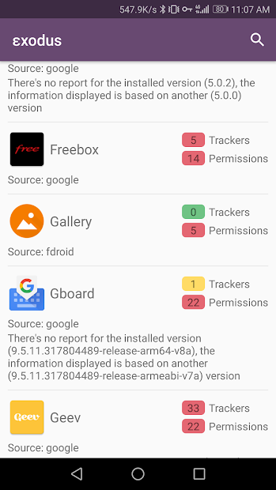
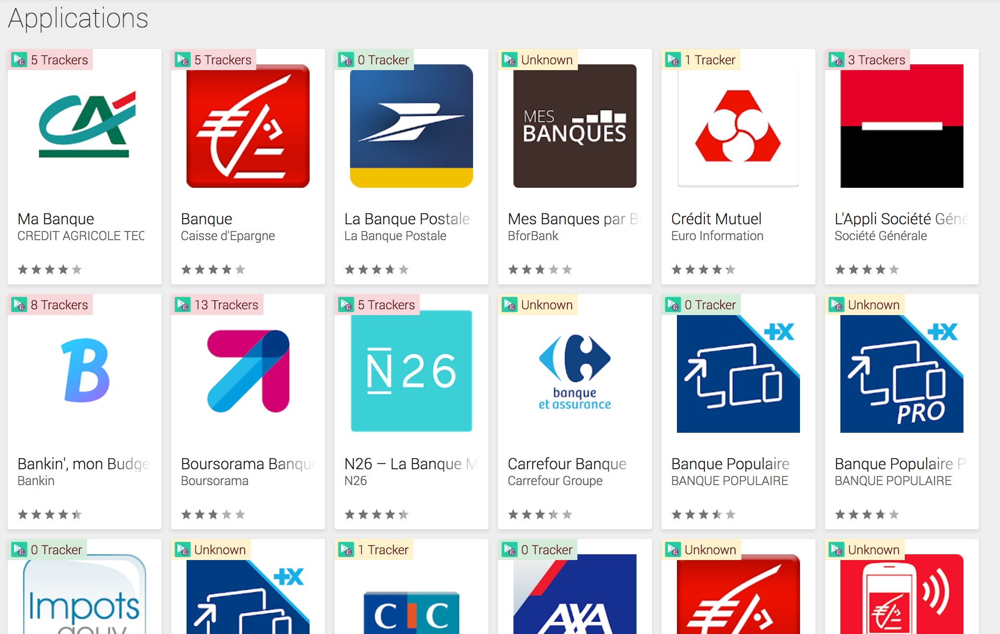
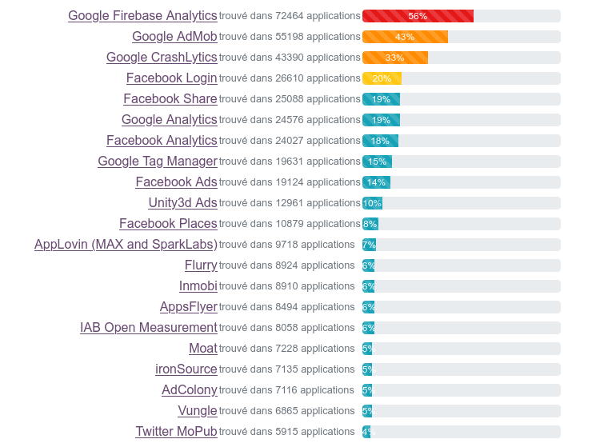

Exodus Privacy
Exodus Privacy — Journées Du Logiciel Libre
Qui sommes-nous ?
De quoi allons-nous vous parler ?
- De ce que font les applications mobiles et les conséquences sur notre vie privée
- De ce que Exodus Privacy fait en la matière
Exodus Privacy
- Un groupe d'hacktivistes français·e·s
- Une association Loi 1901 créée en octobre 2017
- Une vingtaine de membres
- Des règles légales strictes
- Nos outils sont libres
Notre objectif
Mieux informer le grand public de la collecte de données faite par les applications de nos téléphones portables
Comment on fait ?
- Nous développons la plateforme d'audit εxodus
- Nous identifions les pisteurs par leurs signatures
- Nous faisons des analyses statiques d'
APK
Nous développons des outils permettant de savoir ce qu'il se passe dans les applications Android.

C'est quoi un pisteur ?
Un pisteur est un bout de logiciel dont le but est la collecte de données à propos de vous et de vos usages.
Comme Ogury, Google Analytics, Teemo, et beaucoup d'autres.
Comment on les détecte ?
Analyse statique
- Listing des classes Java présentes dans l'APK
- Détection des classes correspondant à la signature de pisteurs
Les outils :
- API Google Play/F-Droid : Télécharge les APK et récupère les détails des applications
- Apkeep: Télécharge les APK du magasin Google Play (maintenu par l'EFF)
- Androguard: récupération des permissions, version du code et certificats
- Dexdump: extraction de la liste des classes de l'APK
Analyse statique

Analyse statique

La plateforme εxodus
- Chercher un rapport concernant une application via un moteur de recherche
- Analyser une application Android via son identifiant
- Partager des astuces pour mieux maitriser sa vie privée

https://reports.exodus-privacy.eu.org
L'application Android Exodus
Montrer les pisteurs et permissions requises des applications de votre ordiphone


Disponible sur F-Droid et Google Play !
Exodify: εxodus dans votre navigateur
- Une extension Firefox et Chrome
- Affiche le nombre de pisteur pour chaque application sur le Play Store
- Un lien pour analyser une application en deux clic
Exodify: εxodus dans votre navigateur

ETIP
εxodus Tracker Investigation Platform
- La base de données des pisteurs εxodus
- Open to everyone and filled by the community
- Main features:
- Track all modifications on trackers
- Detect rules collisions for signature
https://etip.exodus-privacy.eu.org/
What we did since our launch
- We effectively exist since 11/24/2017 - first public release
- We identified +420 trackers, analyzed +128000 apps and generated +266000 reports
- We performed deep audits of several applications like Deliveroo Rider or Baby+
- We provided statistics and datasets to journalists and labs
- We opened a REST API
- We created video animations to explain trackers in applications
- We are creating an educational kit for digital mediators
Everything is free and open üéÑ
Most frequent trackers on +128k applications

Communication
We use different ways to make us visible:
What we need
We are a non-profit organization animated by volunteers.
To stay alive, we need:
Contributions & Money


 Code Lutin
Code Lutin Codeurs en liberté
Codeurs en liberté
 F-Droid
F-Droid Octopuce
Octopuce Fondation AFNIC
Fondation AFNIC Debamax
Debamax